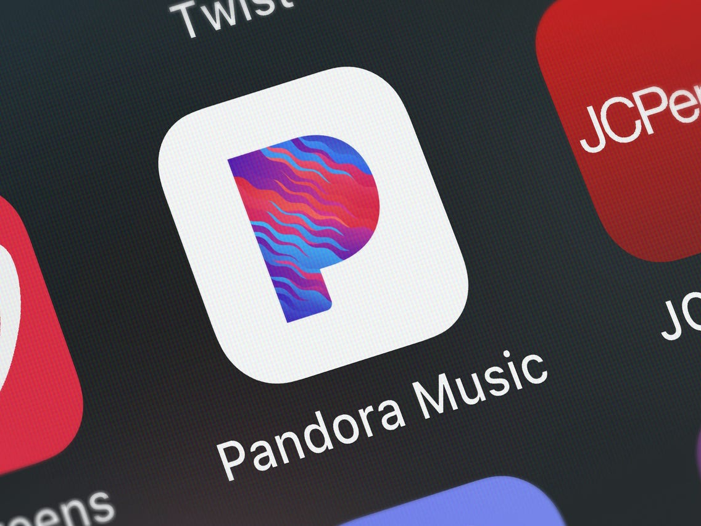
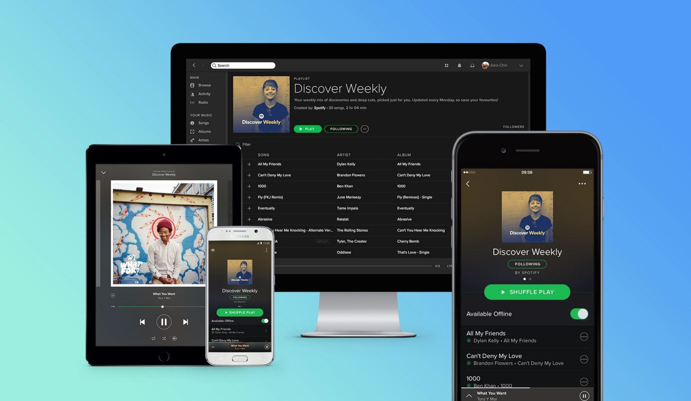

O Streaming de música, chegou ao mercado em 20 de março de 2002 pelo serviço de streaming de música, Last.fm, que permitia aos seus usuários a gravar e escutar músicas, e com o auxílio de um algoritmo analisava os hábitos de escuta e fazia comparações com os dados de todos os outros para fornecer recomendações. Todavia o streaming de música tomou forma a partir do sucesso de outro dispositivo de reprodução de música, o MP3 Player da Apple, o iPod que em 2003 tinha suporte para a plataforma da Apple a iTunes Store, que provia uma biblioteca de música online onde os usuários podiam baixar um catálogo completo de músicas pelo preço de apenas 0,99 dólares por música e, ao mesmo tempo, realizava o streaming de 30 segundos das músicas não adquiridas.
 Em 2005 o segundo serviço de streaming veio ao mundo, a Pandora, que consistia semelhantemente ao Last.fm com a utilização de algoritmos de recomendações de música, mas os utilizava como base para uma reinvenção do rádio. Em vez de ouvir um show dirigido por um DJ com gostos vagamente alinhados aos seus, você tem sua própria estação. Pandora dançou com freemium também, usando um sistema de pagamento semelhante ao atual do Spotify. De graça, sua música era regularmente interrompida por anúncios, por dez dólares por mês, você ouvia música sem fim, do tipo que antes deixaria até o DJ mais falante sem palavras.
 Durante três anos está industria floresceu, mas apenas em 2008 que ocorreu o ponto de inflexão na história do streaming. O Spotify juntou ao mercado e ao mesmo tempo houve um aumento da qualidade da conexão de internet, sendo assim, o streaming de áudio com alta qualidade se tornava viável. A expansão relativamente lenta do Spotify fora de alguns países europeus deu espaço para outras empresas oferecerem suas próprias versões do modelo. Desde então, gigantes como Apple, Google e Amazon embarcaram no trem do streaming assim como muitas empresas menores, cada uma buscando se diferenciar em aspectos importantes.